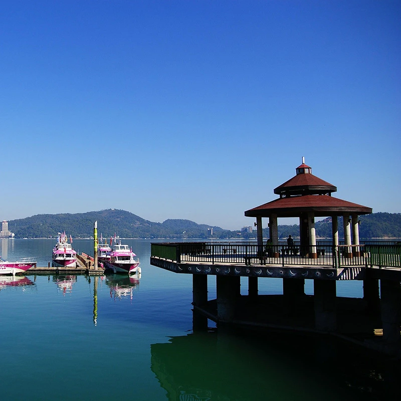
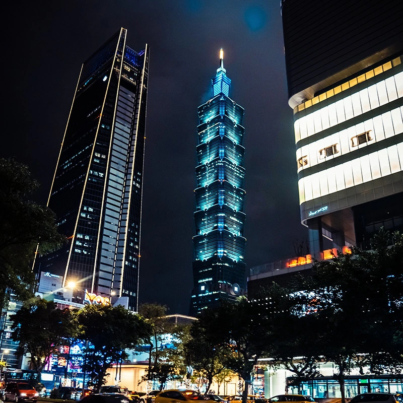

日月潭
日月潭位於南投縣魚池鄉，是台灣最大的天然湖泊，以湖形北圓南彎似「日月」而得名。湖光山色相映成趣，四季景致各具特色，是著名的觀光勝地。環湖自行車道被評為世界級美景路線，遊客亦可搭乘遊船欣賞湖景。周邊涵蓋文武廟、玄光寺及原住民文化園區，融合自然風光與人文特色，是兼具休閒與文化體驗的重要景點。

臺北101
台北101位於台北市信義區，高508公尺，共101層，為台灣代表性地標。建築外觀以竹節為設計意象，象徵步步高升，並採高規格抗震結構，設有重達660公噸的風阻尼球以穩定大樓。89樓觀景台可俯瞰台北市景，結合購物中心與跨年煙火活動，是兼具工程技術與觀光價值的重要景點。
交通部觀光署最新旅遊資訊都在這
交通部觀光署隸屬於中華民國交通部，是台灣推動觀光政策與旅遊發展的重要政府機關。其前身為「交通部觀光局」，隨著觀光產業規模持續成長與國際旅遊市場的變化，政府於2023年將其升格為觀光署，以強化政策規劃能力與整體產業管理機制，並提升台灣在國際觀光市場中的競爭力。
交通部觀光署的主要工作包括規劃全國觀光發展政策、整合各地觀光資源及推動國內外旅遊行銷。同時也負責管理國家風景區、輔導旅行社與旅宿業發展、建立旅遊服務品質標準，並透過觀光活動、文化推廣與數位宣傳提升台灣旅遊形象。透過這些措施，持續吸引國內外旅客，促進地方經濟與觀光產業的永續發展。

住宿注意事項享受寧靜住宿，體驗自在旅程
住宿時應先確認訂房資訊與入住時間，並了解住宿規定，例如退房時間、是否提供早餐及公共設施使用方式。入住前也可檢查房間設備是否完整，如空調、熱水、門鎖與電器等，以確保住宿安全與舒適。此外，妥善保管個人物品，避免將貴重物品隨意放置。
在住宿期間，應遵守旅館或民宿的相關規範，保持環境整潔並避免大聲喧嘩，以維護其他旅客的住宿品質。同時注意消防安全與緊急逃生路線，若發現設備損壞或任何異常情況，應立即通知服務人員處理，確保住宿過程順利且安全。

交通安全平安到家也是旅行的一環
在台灣旅行時，首先需注意交通安全。台灣都市車流量較大，行人過馬路時應遵守號誌並走行人穿越道，避免邊走邊使用手機。若租借機車或自行車，應配戴安全帽並熟悉當地交通規則。此外，搭乘大眾運輸工具時要留意個人物品，避免在人潮擁擠的車站或觀光景點遺失財物。
其次，旅遊過程中也應留意自然環境與氣候變化。台灣夏季炎熱，戶外活動時應適時補充水分並做好防曬；山區或海邊旅遊則需注意天氣預報，避免在颱風、豪雨或海象不佳時進行登山與水上活動。同時遵守景區安全指示，不進入未開放區域，並保持環境整潔。只要做好基本安全準備，就能安心享受台灣豐富多元的旅遊體驗。